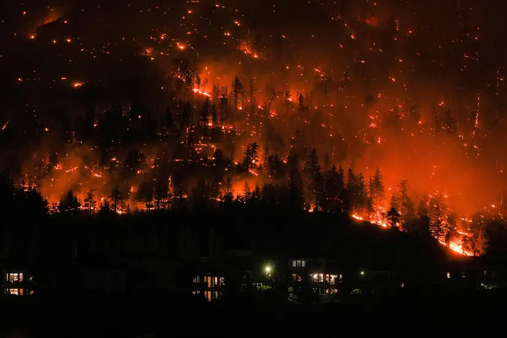
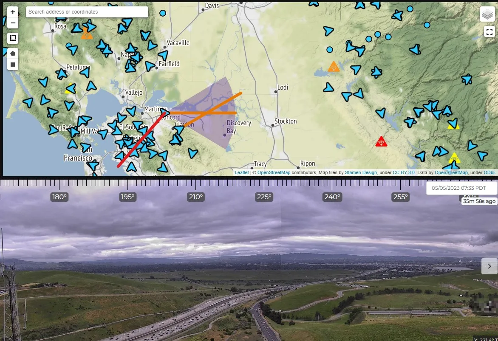
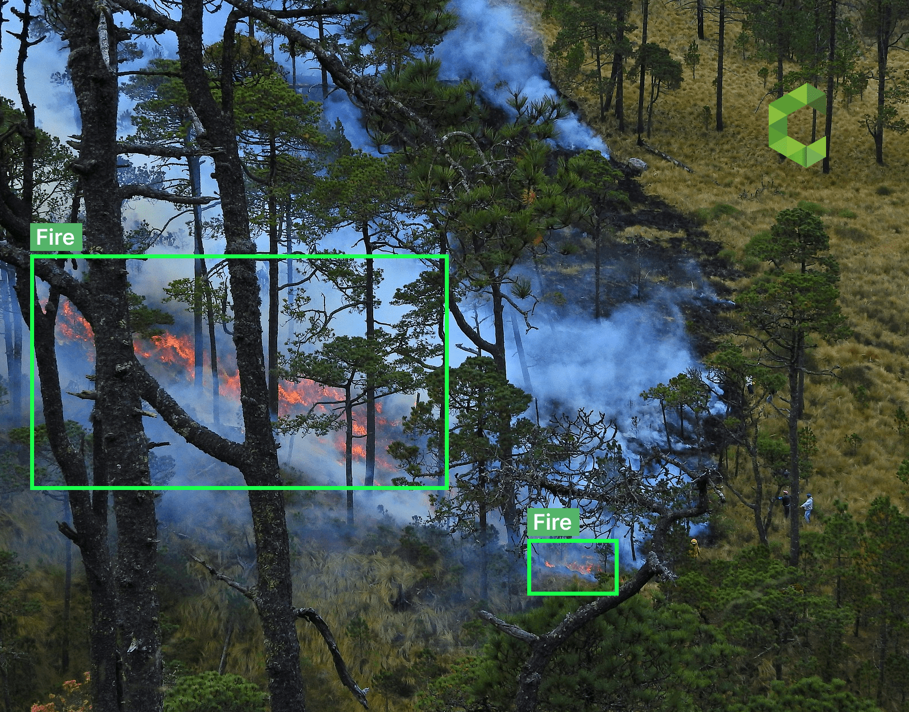
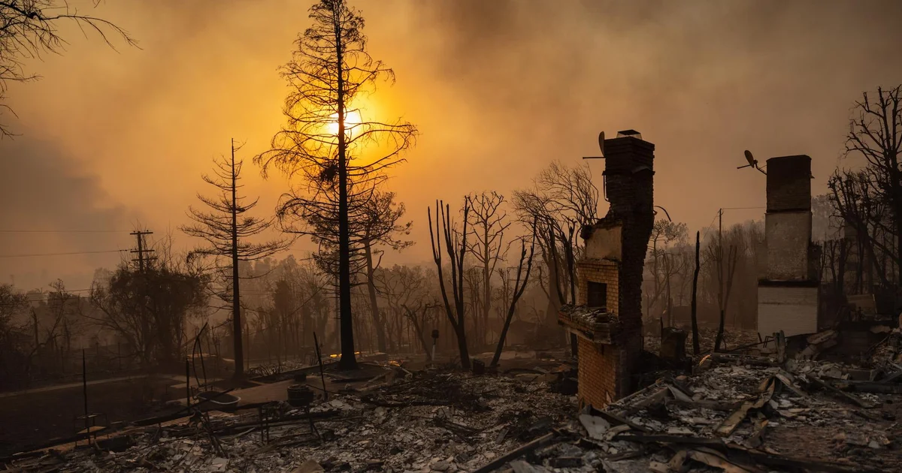
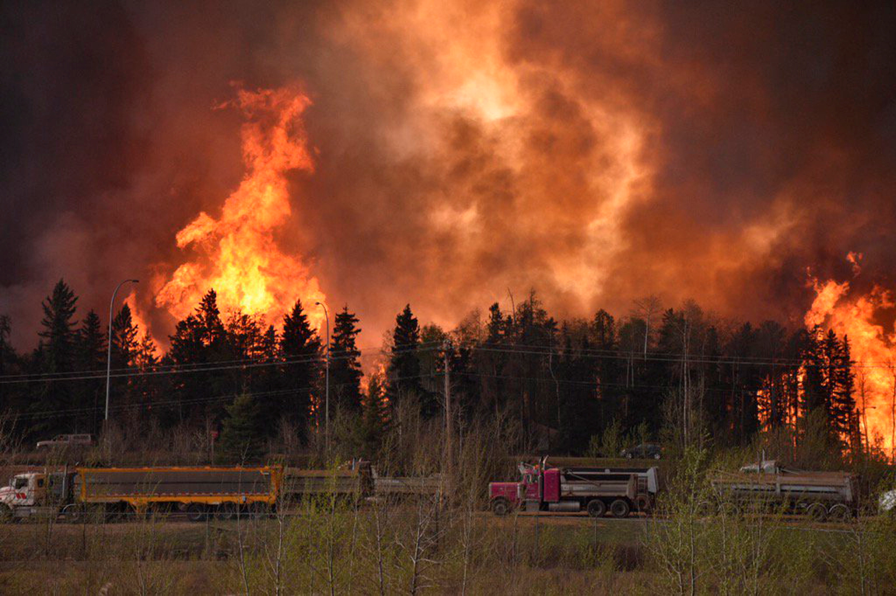

I am researching wildfires for my Natural Disaster project. What interested me in researching this specific natural disaster is that I have experienced it first-hand and have seen the impact it can leave on communities after it has transpired. It is also an event that is possible to happen in areas close to Calgary, especially places further north with dense forests. This disaster can be simulated at a smaller scale, as small, controlled fires like candles may be placed within a dense forest environment to mimic fires that appear within wild ecosystems.

Natural Disaster
There exist three key triggers that lead to fires developing in forest environments. These can be categorized as the amount of dry fuel present from organic materials such as leaves, grass or branches, the amount of oxygen in the air, and an ignition source (Igini, 2023). Possible ignition sources for wildfires are often lightning strikes, which make up most of all wildfires, while the rest are caused by human activity, which are responsible for all other remaining wildfires (BC Wildfire Service, 2023). In terms of natural forces contributing to the creation of wildfires, areas with a hot and dry climate often report higher rates of fires, with it being almost a regular occurrence. This is because the warmth and lack of moisture often leave a wealth of organic materials that are dry and warm, which create perfect conditions for a fire to start (Igini, 2023).

Causes and Triggers
There are many technologies currently in use that are used to detect wildfires. Starting with satellites, they orbit around the earth and take constant pictures of global wildfires, which is useful in figuring out the size, location, temperature, and duration of fires. Drones are also used to fly over and monitor forests with wildfire risks, as they can use different cameras and sensors to detect the presence of any fires in the area (WFCA, 2024). A specific system that is currently being used to monitor wildfire is the ALERTCalifornia system established at UC San Diego. It consists of over 1000 high-resolution cameras that are placed around California to strategically provide 24-hour surveillance to properly detect a possible wildfire (ALERTCalifornia, 2023).

Sensing
ALERT California Camera Map and Feed
One technological advancement to aid in better sensing the presence of wildfires is artificial intelligence. Artificial intelligence allows sensor data from satellites and ground sensors to be processed to predict fire behavior. Factors taken into consideration are weather, drought conditions, and topography among others. Using this, AI can predict the path of fires, forecast its magnitude, and simulate it to assess its danger and evaluate different suppression strategies (WFCA, 2024).

There are many effects that occur because of wildfires. Right after a wildfire, one would expect to see much destruction and charring, particularly to vegetation and housing, due to both being made primarily of flammable materials. The primary immediate effect of wildfires is the destruction of homes, infrastructure, and forest ecosystems. These consequences may evolve into larger long-term effects. The destruction of homes and infrastructure creates larger economic pains, such as disrupting major industries like agriculture, tourism, and forestry. The associated cost with rebuilding after a large fire also negatively impacts the nearby economy. These often displace people and cause challenges for the people affected. On the other hand, ecological effects include the elimination of habitats, the death of animal species and the stunting of environmental regrowth. All these factors may shift the species composition and structure of the ecosystem. Other long-term effects include human health risks due to smoke and speeding up climate change (IERE Team, 2025).

Aftermath
It is important to follow specific disaster recovery steps after a wildfire to ensure proper reconstruction of damaged infrastructure and diminish the risks of further possible damage. The first step is to clean up the sites of the wildfire by removing rubble and hazardous waste. The next step involves tackling any damage done to water and energy infrastructure. The final step in the recovery process is to begin rebuilding homes and buildings that were affected by the fires (Lash, 2025). An example of the recovery process following such a disaster is the process after the Fort McMurray Wildfire in 2016. Once return plans were made in June 2016, priorities were to help the local economy through the aid of small businesses, facilitating the distribution of aid through donations and returning skilled laborers to the town (Thurton, 2016). Environmental long-term effects of the fire included exhaustive damage to the local environment, most notably the Athabasca River (Weber, 2020). Economic effects included the massive cost for rebuilding and the notable financial hits towards the oil and gas industry that Fort McMurray relies on (Zabjek, 2016). A rover that would navigate such a disaster zone would primarily require good mobility for venturing off-road, cameras to navigate through a smoky atmosphere and sensors to detect the presence of fire and gases.

Disaster Recovery
ALERTCalifornia. (2023, July 10). CAL FIRE and University of California San Diego’s ALERTCalifornia Program Join Forces to Enhance Wildfire Response with Artificial Intelligence Implementation Trial . ALERTCalifornia; ALERTCalifornia. https://alertcalifornia.org/cal-fire-and-university-of-california-san-diegos-alertcalifornia-program-join-forces-to-enhance-wildfire-response-with-artificial-intelligence-implementation-trial/
BC Wildfire Service. (2023, May 18). What causes wildfire - Province of British Columbia. Www2.Gov.bc.ca. https://www2.gov.bc.ca/gov/content/safety/wildfire-status/wildfire-response/what-causes-wildfire
Howes, N. (2026, May 9). A decade of recovery: How Fort McMurray’s resilience has helped rebuild. The Weather Network. https://www.theweathernetwork.com/en/news/weather/severe/fort-mcmurray-alberta-wildfire-a-decade-of-adaptation?darkschemeovr=1&setlang=en-US
IERE Team. (2025, June 15). What Are the Effects of Wildfires? - The Institute for Environmental Research and Education. The Institute for Environmental Research and Education. https://iere.org/what-are-the-effects-of-wildfires/
Igini, M. (2023, April 13). What Causes Wildfires? Earth.org; Earth.org. https://earth.org/what-causes-wildfires/
Lash, J. (2025, January 18). After the fires: UCLA urban planner on disaster response and rebuilding. Preventionweb.net. https://www.preventionweb.net/news/after-fires-ucla-urban-planner-disaster-response-and-rebuilding/
Thurton, D. (2016, November 3). Fort McMurray’s next 6 priorities in wildfire recovery. CBC. https://www.cbc.ca/news/canada/edmonton/fort-mcmurray-s-next-6-priorities-in-wildfire-recovery-1.3834001
Weber, B. (2020, July 10). Scientists surprised at Fort McMurray fire’s long impact on rivers. CBC. https://www.cbc.ca/news/canada/edmonton/scientists-surprised-at-fort-mcmurray-fire-s-long-impact-on-rivers-1.5644978
WFCA. (2024, September 17). What Technology is Used to Predict Wildfires? WFCA; WFCA. https://wfca.com/wildfire-articles/fire-prediction-technology/
Zabjek, A. (2016, November 15). $5.3B to be spent rebuilding Fort McMurray, boosting GDP, Conference Board says. CBC. https://www.cbc.ca/news/canada/edmonton/fort-mcmurray-wildfire-rebuilding-gdp-1.3850758?cmp=rss